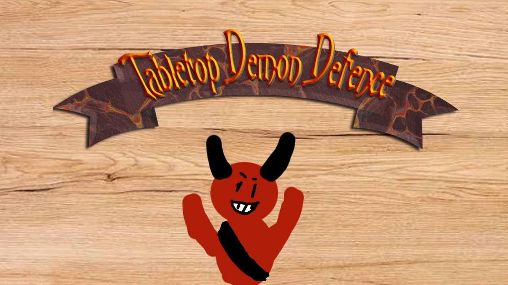
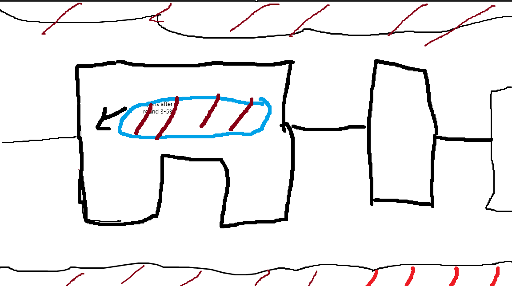
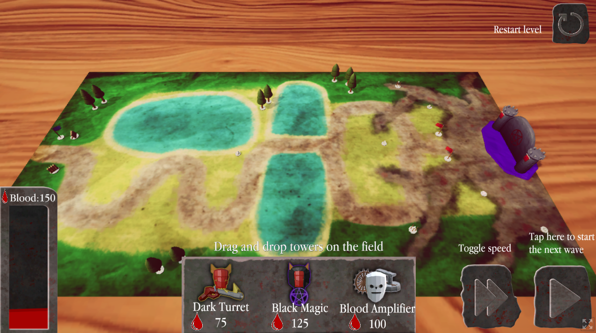
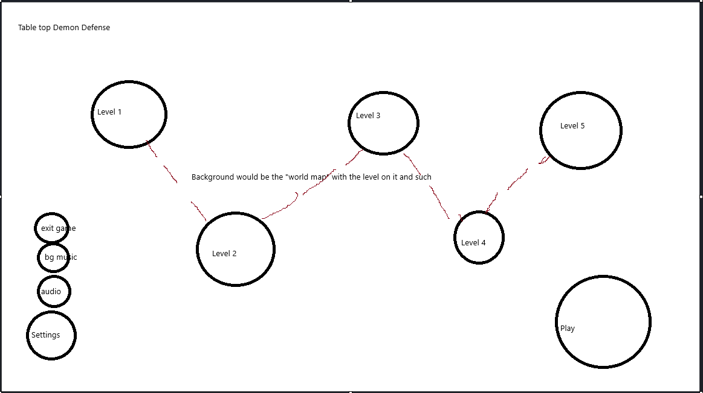
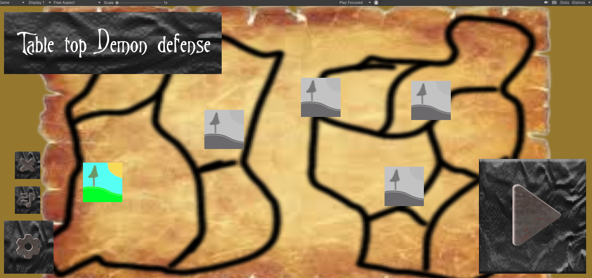

Video Game, Group project
Tabletop Demon Defender
A tower defense game made for mobile devices as part of a group project. The main focus of this game was optimisation and game balance, making sure that even a simple mobile phone could run the game AND that it was enjoyable to play, of course!

About the Project
Tabletop Demon Defender (or TDD) was a group project for school where we were tasked with making a game that could run on most mobile devices. For this reason, we had to make sure our game was well optimised, that the UI and gameplay were enjoyable and worked well on mobile devices, and that the game was, of course, still fun to play. As a group, we decided to try making a tower defence game from the "villains'" perspective. Therefore, we play from the demons' point of view instead of the humans'.
My Contribution
- UI design
- Story design
- Gameplay design
- Game balancing
Project Details
Role
Gameplay Designer
Engine
Unity
Team Size
6 people
Duration
3 weeks
Development Process
Below, you can find some screenshots of the development process, along with explanations of the work I did.
For this project, the story took a bit more of a backseat compared to my other projects. However, we still wanted it to be interesting and make sense. We chose to make the player take on the role of a demon, adding a more unique aspect to the game. We tried to put a different spin on the simple fantasy "demon king and hero" plot, favouring the demons a bit more to make it clear why they would be defending themselves against the humans.
We also brainstormed different environments that could favour either the player or the enemies, depending on which territory they were in. Unfortunately, we did not have enough time to fully implement these ideas, so they remained concepts.
Compared to the story, gameplay was a major part of the project, and we invested a lot of time in brainstorming ideas and perfecting them.
The towers were the biggest focus in this part of development. We wanted them to be fun, interesting and upgradeable, depending on the player's playstyle. We brainstormed a total of six different towers, each with two different upgrade paths and three different levels. In the end, the project contained three of these towers, each with three levels and two different upgrade paths. You can see the concepts and upgrade paths for these towers in the document below.
We also came up with some ideas for enemies and how they could be unique. Although we implemented some of these ideas, we only created a few simple enemies, such as the Tank and Runner, as well as the Flying Enemy, which can only be attacked by ranged towers. We decided to focus on the towers, which, due to the three-week time limit, didn't leave our engineers with much time to create additional unique enemies. Therefore, the enemy variety might be a little lacking. However, I think it still worked out nicely, as our towers turned out well and were the main focus of the game. You can also find our enemy brainstorming document below.
I was in charge of both the level design and UI, and for both of these, I had to create some simple concept art. Below, you can find the concept art alongside the final implementation.



Due to a lack of time, we were unable to implement this system in the final product.

Game balance was an important part of our development process. During and after development, we spent quite a few days testing the game with our peers and adjusting variables to get a good feel for the game's balance. During the first few iterations, we noticed that players could simply win by using one tower (which obviously wasn't the intention). After that, we tweaked some numbers, such as costs, damage and enemy health, until we got the game into a decent position.
Of course, since the project only lasted three weeks, and most of that time was spent creating prototypes and developing the final product, the balance still isn't in a "perfect" place. However, it has certainly improved from the prototype to the final product.
Final Result
In the end, this project greatly helped me gain experience in playtesting and balancing my game, discussing ideas with both artists and engineers, and creating simple concept art and UI. I also gained experience working on a mobile game and dealing with the challenges that come with it, such as performance, user interface and interaction, file size, and more.